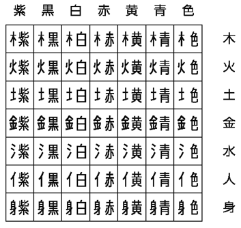

| 紫 | 黒 | 白 | 赤 | 黄 | 青 | 色 | |
|---|---|---|---|---|---|---|---|
| ゑ | あ | や | ら | よ | ち | い | 木 |
| ひ | さ | ま | む | た | り | ろ | 火 |
| も | き | け | う | れ | ぬ | は | 土 |
| せ | ゆ | ふ | ゐ | そ | る | に | 金 |
| す | め | こ | の | つ | を | ほ | 水 |
| ん | み | え | お | ね | わ | へ | 人 |
| し | て | く | な | か | と | 身 |
下の2つの表を見比べることで、平文文字（いろは仮名）と暗号文文字（忍びいろは）の対応関係がわかります。
縦軸（右端）が偏（へん）、横軸（上部）が旁（つくり）
| 紫 | 黒 | 白 | 赤 | 黄 | 青 | 色 | |
|---|---|---|---|---|---|---|---|
| ゑ | あ | や | ら | よ | ち | い | 木 |
| ひ | さ | ま | む | た | り | ろ | 火 |
| も | き | け | う | れ | ぬ | は | 土 |
| せ | ゆ | ふ | ゐ | そ | る | に | 金 |
| す | め | こ | の | つ | を | ほ | 水 |
| ん | み | え | お | ね | わ | へ | 人 |
| し | て | く | な | か | と | 身 |
同じ位置にある文字同士が対応します

忍びいろは暗号表にない文字は、以下のルールで自動的に清音に変換されます。
復号できないかたまりは?になり、画面に知らせます。復号モードでもカーソル位置のかたまりに対応するセルが光ります。